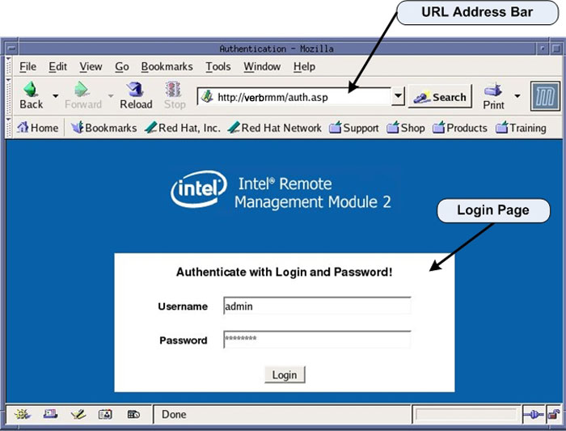
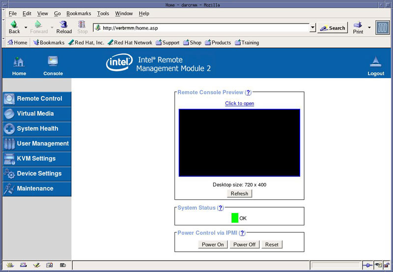

Operating Documentation
Direction 5193574-800, Rev# 22
LightSpeed 7.X Service Methods
Module Version 2.0, Version Date 8/16/10
Operating Documentation |
| Required Persons | Preliminary Reqs | Procedure | Finalization |
|---|---|---|---|
| 1 | Not Applicable | 30 mins | 30 mins |
The following procedure describes and illustrates the BIOS CMOS settings for the VeRB2 Computer.
| NOTE: | Only those settings that are altered from the installed BIOS defaults settings are listed in the procedure. The procedure first restores default values. Select settings are then changed to meet specific needs for the hardware application. |
DIG Motherboard BIOS Revision: S5000.86B.11.00.0096.101720071530, (E0-Stepping CPUs).
| Last revised: | 4 June 2010 |
| Condition | Reference | Effectivity |
|---|---|---|
The CT System hardware must be in good working order. | - | - |
Only trained service personnel should service the GE CT Scanner. | - | - |
Shut down Applications from the Common Service Desktop, Utilities Tab.
Open a Terminal Window, and log on as root:
Type: {ctuser@hostname} su- [ENTER]
Type the root password and press [ENTER]
Launch the Mozilla WEB browser:
Type:{root@hostname} mozilla [ENTER]
Select [default profile].
Select [Start Mozilla].
| NOTE: | Steps b & c will only appear if the Mozilla Browser default profile has been altered and saved. |
Illustration 1: Mozilla Web Browser

Follow instruction listed in the following section for setting the VeRB2 Computer Motherboard BIOS Settings.
In the WEB Browser URL Address Bar:
Type: verbrmm [ENTER]
The WEB Browser will update and display the Login page for the VeRB2 RMM.
Username Type:admin [TAB]
Password Type: password [ENTER]
Illustration 2: VeRB2 RMM Login Page

The WEB Browser will update and display the Home page for the VeRB2 RMM.
Illustration 3: VeRB2 RMM Home Page

Click on Console icon or [Click to Open] in the Remote Console Preview window on the RMM Home Page to open a Remote Console.
| NOTE: | The Remote Console is a redirected display of the VeRB2 Computer. It will appear blank when first accessed. The Remote Console will act much like a KVM Switch, virtually using the Host Computer’s Monitor, Keyboard and Mouse |
Reset the VeRB2 Computer by pressing the RESET button on the VeRB2 Computer front panel. This will cause the VeRB2 Computer to reboot, but does not reset the RMM. Shortly there after, the Boot Screen of the VeRB2 Computer should be displayed in the Remote Console window.
Press <F2> on the keyboard when instructed, to enter the VeRB2 Computer’s Motherboard BIOS setting routine. See Illustration 4.
| NOTE: | Multiple [F2] presses may be needed to enter BIOS Setup. |
Illustration 4: BIOS Setup Flash Screen

Press <F9> and click YES to load Optimized Defaults (BIOS Default Settings).
Select the [Main] tab.
Use +/- keys to change defaults, see on-screen menu keys for additional help.
Set Post Error Pause setting to [DISABLED].
Hit <Esc> to return to the top level of BIOS Setup.
Navigate to the [Advanced] tab.
Set System Acoustic and Performance Configuration > Throttling Mode to [CLOSED LOOP].
Hit <Esc> to return to the top level of the [Advanced] tab.
Set PCI Configuration > Dual Monitor Video to [ENABLED].
Hit <Esc> to return to the top level of the [Advanced] tab.
Set PCI Configuration > OnBoard NIC2 ROM to [DISABLED].
Hit <Esc> to return to the top level of the [Advanced] tab.
FOR E0 STEPPING CPU's, BIOS REV. S5000.86B.11.00.0096.101720071530 ONLY. Set Processor Configuration > Deep C-State Support to [OFF].
| NOTE: | BIOS Revision can be found on the [Main] tab. |
Hit <Esc> to return to the top level of BIOS Setup.
Navigate to the [BOOT OPTIONS] tab.
Set the boot order settings as follows:
1. IBA GE Slot 400
2. Intel RMM2 Vdrive
3. EFI shell
4. N/A
5. N/A
Press the <F10> and [YES] to save settings and exit.
The VeRB2 Computer will reboot.
After completing the BIOS Settings Procedure, the VeRB2 Computer will reboot. Verify that the VeRB2 Computer has powered up and is not displaying or sounding any POST Errors.
| NOTE: | See VeRB2 Troubleshooting if any Post Errors appear. |
Close Mozilla Browser and reboot the system by typing:
Type: [root@hostname] reboot [ENTER]
In order to assure proper operation of the VeRB2 computer, perform the System Configuration procedure located in the applicable Align, Setup, Cals → Console folder of this service methods publication.
| NOTE: | No changes are required in the System, Preferences, Hardware, and Network settings. The procedure just needs to be executed in order for the automated scripts to run. During the re-configuration process the DHCP Server running on the Host Computer is reconfigured to support the new VeRB2 Computer Ethernet MAC addresses |
| NOTE: | Until the System Configuration Procedure is performed, the Linux OS bootup text will display an error message when the VeRB2 computer attempts to mount its NFS on the Host Computer. Ignore the error message. |
Go to Functional Checks in this manual and perform System Scanning Test to confirm proper operation.